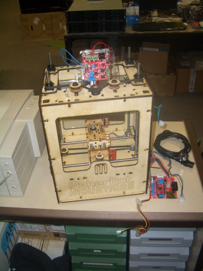
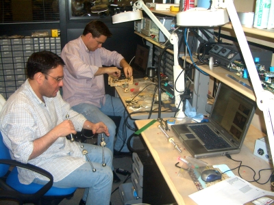
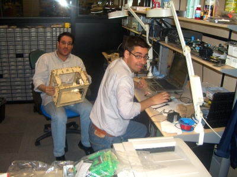
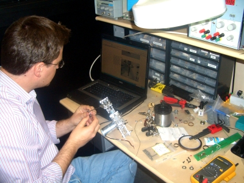
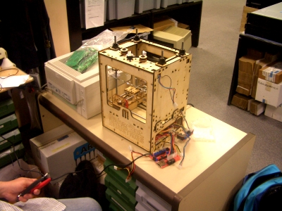

La noche del jueves al viernes 15 estuvimos en Flir Network (antes Ifara) Andrés, Ricardo y yo montando la Reprap.

Andrés comenzó por el ensamblado de los ejes x e y. Ricardo y yo por el montaje de la estructura y el eje z.

Tras unas merecidas pizzas y un poco de coca-cola para vencer el sueño, continuamos con nuestra labor. Andrés terminó de montar los ejes y empezó con el cabezal (extruder), una de las partes más críticas. El cabezal se encarga de arrastrar el hilo de plástico hacia la parte caliente, donde se derrite y se vierte en forma de hilillo de plástico de 0.5mm de espesor.

Este es el aspecto de la estructura montada, con los ejes x e y integrados:

Sobre las 6:00 de la mañana teníamos la estructura finalizada y también el cabezal. Lo pusimos en la máquina y comenzamos las pruebas. Toda la electrónica funcionó correctamente, sin embargo aparecieron problemas con el vertido del plástico: aparecía un hilo fino de unos 3cm de longitud, pero luego dejaba de salir. Como estábamos muy cansados lo dejamos.
El estado actual de la máquina es que está casi completada. Nos falta soldar algunos componentes a la electrónica (que nos vinieron mal por error), colocar la electrónica dentro de la máquina y solucionar el problema del cabezal. Es un problema que ha tenido más gente y que algunos han solucionado y lo han documentado.
Durante esta semana no podremos hacer más pruebas y posiblemente el próximo fin de semana tampoco. E stamos muy liados con un curso de programación de PICs. Pero en cuanto tengamos tiempo continuaremos.